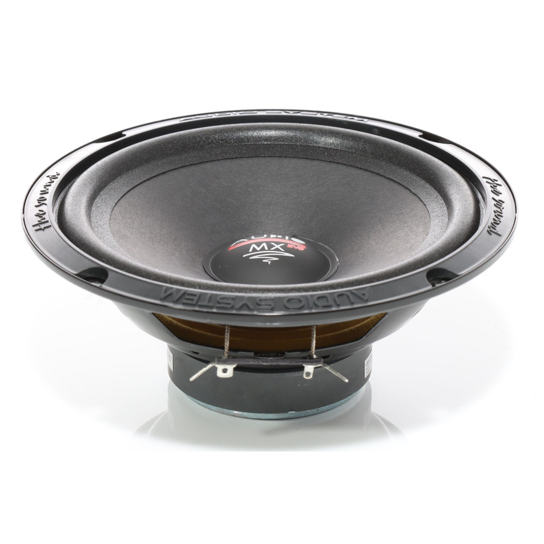

De luidspreker ligt op zijn rug: het membraan trilt op en neer rond de evenwichtsstand. Zet het geluid aan en verander de periode en het volume. Wat je hoort is de echte trilling; wat je ziet is 500× vertraagd.
y(t) = A · sin(2π · t / T)
y(t) = 3,0 mm · sin(2π · t / 4,5 ms) f = 1/T = 222 Hz

Een echte luidspreker. Het grijze deel in de vorm van een trechter is het membraan (de conus). Het ronde dopje in het midden is de stofkap: dat punt volg je in de simulatie. Rond het membraan zit een rubberen rand die het vasthoudt en terugtrekt naar de evenwichtsstand. Hij werkt dus als de veer. Onderaan zit de magneet: die duwt het membraan op en neer. Foto: (bron)
Hoe lang één volledige trilling (op en neer) duurt. Kortere periode = hogere toon.
Hoe ver het membraan maximaal uitwijkt (de amplitude).